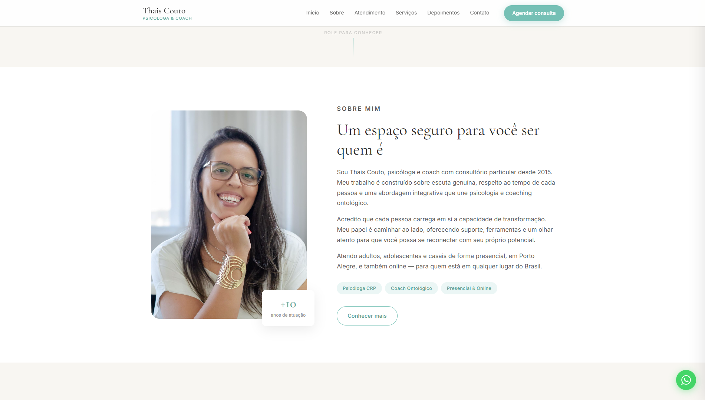
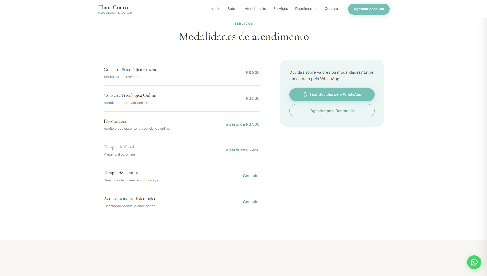
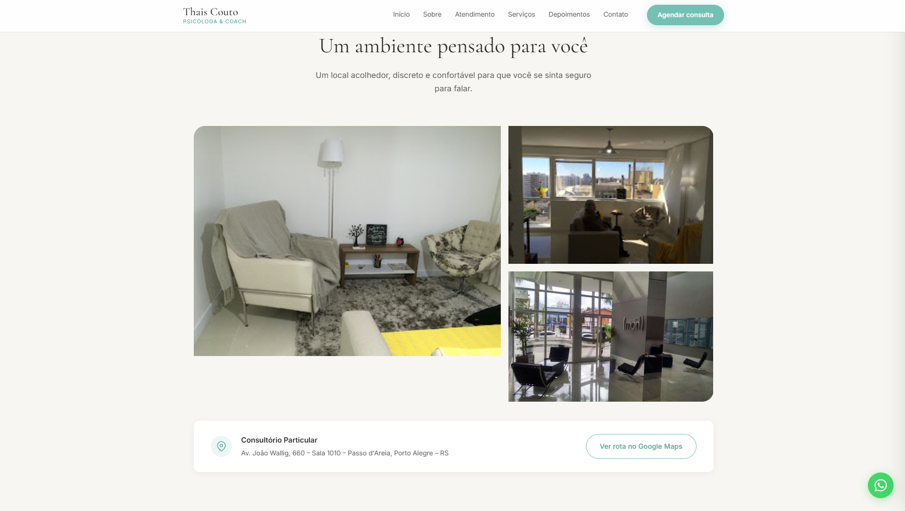
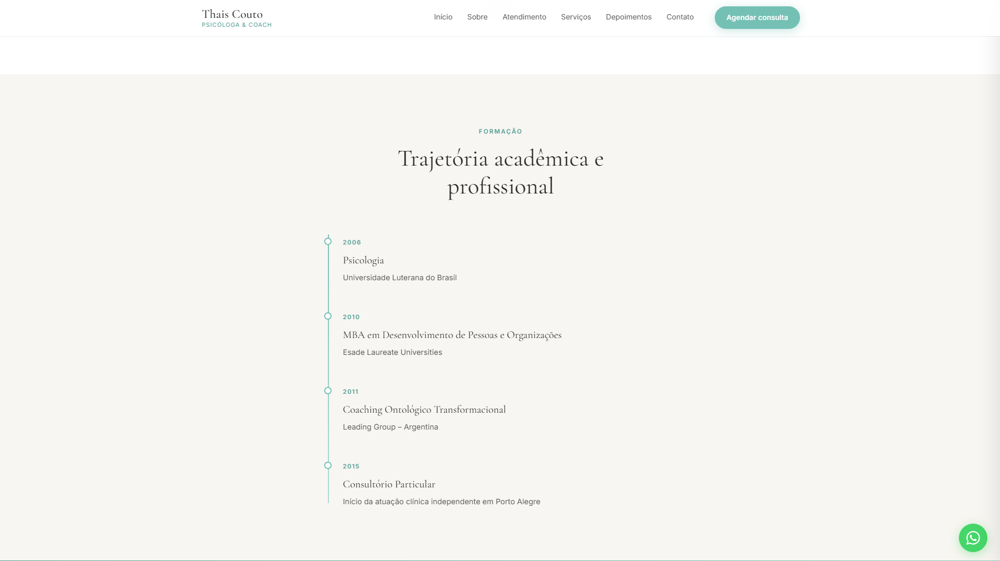
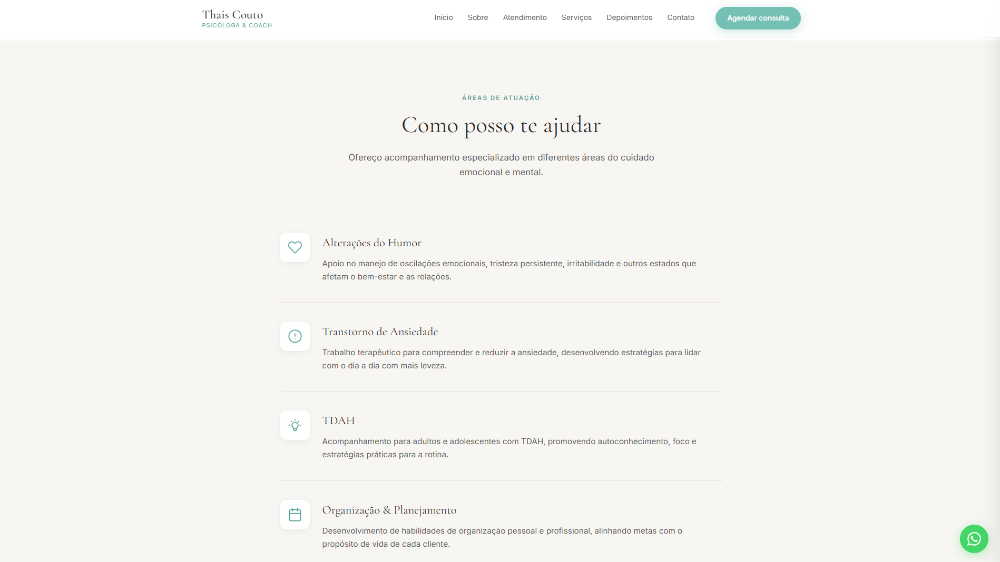

04 / 05
Thaís
Landing page conceitual para psicóloga, com foco em acolhimento, leveza, credibilidade e conversão para agendamento.
Estudo conceitual desenvolvido para fins de aprendizado e demonstração técnica, utilizando referências públicas para apresentar uma possível direção de redesign.
Projeto publicado ↗


"Conduzir o visitante de forma natural até o agendamento, com leveza e confiança."
Este projeto nasceu como um estudo sobre como uma landing page pode transmitir acolhimento, leveza e profissionalismo ao mesmo tempo. A proposta buscou valorizar a identidade da profissional através de uma comunicação visual clara, moderna e focada na experiência do usuário.
Toda a estrutura foi planejada para conduzir o visitante de forma natural até o contato e agendamento, utilizando elementos visuais suaves, espaços amplos e uma navegação intuitiva. Além do aspecto estético, o projeto também serviu como exercício de design centrado no usuário e construção de interfaces voltadas para conversão.

